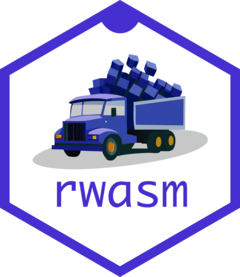

Build R packages using GitHub Actions
Source:vignettes/github-actions.Rmd
github-actions.RmdIntroduction
Using the set of GitHub Actions provided by r-wasm/actions, it is possible to build a list of Wasm R packages and automatically deploy the resulting package repository or library image to a GitHub Pages URL. This workflow simplifies the process of deploying a set of R packages for use with webR, and enables continuous integration.
Setting up the GitHub repository
First, create a new GitHub repository following GitHub’s instructions to initialise a new empty git repo.
Create a file named packages, containing a list of R
package references. Add one R package per line, and custom R
packages hosted on GitHub may also be included here. For example:
cli
dplyr
tidyverse/ggplot2@v3.4.4Next, create a new GitHub Actions workflow file at
.github/workflows/deploy.yml, by running
usethis::use_github_action(
url = "https://raw.githubusercontent.com/r-wasm/actions/v1/examples/deploy-cran-repo.yml",
save_as = "deploy.yml"
)The workflow contents will have two workflow jobs. The first job builds the list of R packages into a package repository and uploads it as an artifact file. The second job downloads and deploys the package repository to GitHub Pages.
The workflow file should look like this:
# Workflow derived from https://github.com/r-wasm/actions/tree/v1/examples
# Need help debugging build failures? Start at https://github.com/r-lib/actions#where-to-find-help
on:
push:
# Only build on main or master branch
branches: [main, master]
# Or when triggered manually
workflow_dispatch:
name: Build and deploy wasm R package repository
jobs:
# Reads `./packages` for package references to put
# into a CRAN-like repository hosted on GitHub pages
deploy-cran-repo:
uses: r-wasm/actions/.github/workflows/deploy-cran-repo.yml@v1
permissions:
# To download GitHub Packages within action
repository-projects: read
# For publishing to pages environment
pages: write
id-token: writeCommit the new GitHub Actions file changes, then push the commit to GitHub.
The GitHub Actions build process
The GitHub Actions workflow should automatically start to run and build your list of packages. You should be able to see progress of the website build step in the Actions section of your GitHub project.
After a little while, your GitHub Pages website will be ready and webR should be able to install your package from a GitHub Pages URL:
webr::install("cli", repos = "http://username.github.io/my-wasm-repo/")
#> Downloading webR package: cliFurther usage details can be found in the r-wasm/actions GitHub documentation.
Using an R package library image
An Emscripten filesystem image containing an R package library may
also be built and attached to a GitHub package release. If you’d prefer
to mount an R package library, rather than install packages from a
CRAN-like repo, use the release-file-system-image.yml
workflow.
usethis::use_github_action(
url = "https://raw.githubusercontent.com/r-wasm/actions/v1/examples/release-file-system-image.yml"
)Commit the new GitHub Actions file, then make a release through the GitHub web interface. GitHub Actions will build a Wasm filesystem image for your package and its dependencies and upload it as asset files for that specific package release.
Once the Github Action has finished, the library.data
and library.js.metadata assets files can be downloaded from
the GitHub releases page. The filesystem image files should then be made
available through static hosting in some way, for example though further
GitHub Actions steps to upload the filesystem image files as part of a
custom GitHub Pages website.1
Finally, in webR, mount the statically hosted filesystem image and
set the .libPaths() to load a package from the package
library:
webr::mount("/my-library", "https://org.github.io/repo/download/library.data")
.libPaths(c(.libPaths(), "/my-library"))
library(dplyr)
#> Attaching package: ‘dplyr’
#>
#> The following objects are masked from ‘package:stats’:
#>
#> filter, lag
#>
#> The following objects are masked from ‘package:base’:
#>
#> intersect, setdiff, setequal, unionFurther information about Emscripten filesystem images can be found
in the vignette("mount-fs-image.Rmd") article.